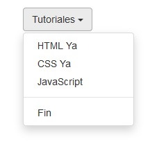

Cuando queremos componentes que sumen funcionalidades más complejas que las que permite HTML y CSS aparece en escena Javascrpt.
Bootstrap añade una librería de Javascript para podes implementar menú desplegables, ventanas modales, carousel etc.
Hay que tener en cuenta que cuando necesitamos implementar estas funcionalidades en nuestro sitio web debemos agregar aparte del archivo "bootstrap.min.css" los archivos "jquery.min.js" y "bootstrap.min.js".
El archivo "jquery.min.js" es necesario ya que todas las librerías de Bootstrap se basan en este framework.
<!DOCTYPE html>
<html>
<head>
<title>Prueba de Bootstrap</title>
<link href="css/bootstrap.min.css" rel="stylesheet">
<meta name="viewport" content="width=device-width, initial-scale=1">
</head>
<body>
<div class="container">
<div class="dropdown">
<button class="btn btn-default dropdown-toggle" type="button"
id="menu1" data-toggle="dropdown">Tutoriales
<span class="caret"></span></button>
<ul class="dropdown-menu" role="menu" aria-labelledby="menu1">
<li role="presentation">
<a role="menuitem" tabindex="-1" href="#">HTML Ya</a>
</li>
<li role="presentation">
<a role="menuitem" tabindex="-1" href="#">CSS Ya</a>
</li>
<li role="presentation">
<a role="menuitem" tabindex="-1" href="#">JavaScript</a>
</li>
<li role="presentation" class="divider">
</li>
<li role="presentation">
<a role="menuitem" tabindex="-1" href="#">Fin</a>
</li>
</ul>
</div>
</div>
<script src="js/jquery.min.js"></script>
<script src="js/bootstrap.min.js"></script>
</body>
</html>
Lo primero que tenemos que observar que hemos agregado las dos librerías de Javascript en la parte inferior del archivo:
<script src="js/jquery.min.js"></script>
<script src="js/bootstrap.min.js"></script>
Para crear un menú desplegable debemos definir un div con la clase "dropdown":
<div class="dropdown">
Luego un button donde debemos inicializar obligatoriamente la propiedad data-toggle con el valor "dropdown":
<button class="btn btn-default dropdown-toggle" type="button" id="menu1" data-toggle="dropdown">Tutoriales
<span class="caret"></span></button>
Luego definimos una lista no ordenada inicializando la clase "dropdown-menu":
<ul class="dropdown-menu" role="menu" aria-labelledby="menu1">
Las opciones del menú son los item de la lista:
<li role="presentation">
<a role="menuitem" tabindex="-1" href="#">HTML Ya</a>
</li>
<li role="presentation">
<a role="menuitem" tabindex="-1" href="#">CSS Ya</a>
</li>
<li role="presentation">
<a role="menuitem" tabindex="-1" href="#">JavaScript</a>
</li>
<li role="presentation" class="divider">
</li>
<li role="presentation">
<a role="menuitem" tabindex="-1" href="#">Fin</a>
</li>
Cuando no se encuentra desplegado:
Y cuando el usuario lo selecciona:
